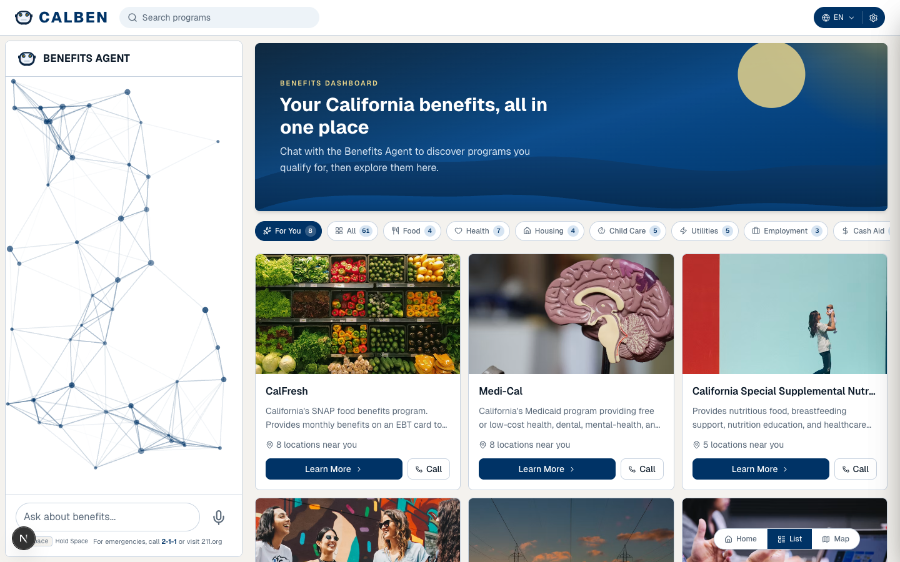

CalHHS Benefits Assistant
An agentic AI application that simplifies how Californians discover and apply for CalWORKs, CalFresh, Medi-Cal, and 20+ other safety-net programs.

About this project
As a Responsible Tech Fellow at the California Health and Human Services Agency, I scoped and built an agentic AI application that simplifies how Californians discover and apply for safety-net benefits across CalWORKs, CalFresh, Medi-Cal, and 20+ other programs.
The work spanned defining product requirements end to end, from early-stage research through working prototype, and leading cross-agency stakeholder alignment across CalHHS departments while navigating policy constraints, user needs, and technical feasibility. The result replaced a fragmented, manual benefits-discovery experience with an intelligent, end-to-end pipeline that automates opportunity matching and guides users through the application process in real time, with the people the system serves at the center of every decision.
On the build side, I shipped a Next.js frontend (React, Tailwind, Radix UI, React Query) with a Vercel AI SDK chat surface and an embedded Google Maps view that turns matched programs into nearby office locations. The FastAPI backend (Python, SQLAlchemy, asyncpg on PostgreSQL) hosts the agent built on Anthropic Claude, with the program catalog and eligibility rules defined in versioned YAML and migrations managed via Alembic. State syncs between agent turns and the dashboard via localStorage so follow-up questions add to (rather than replace) the user's matched set.